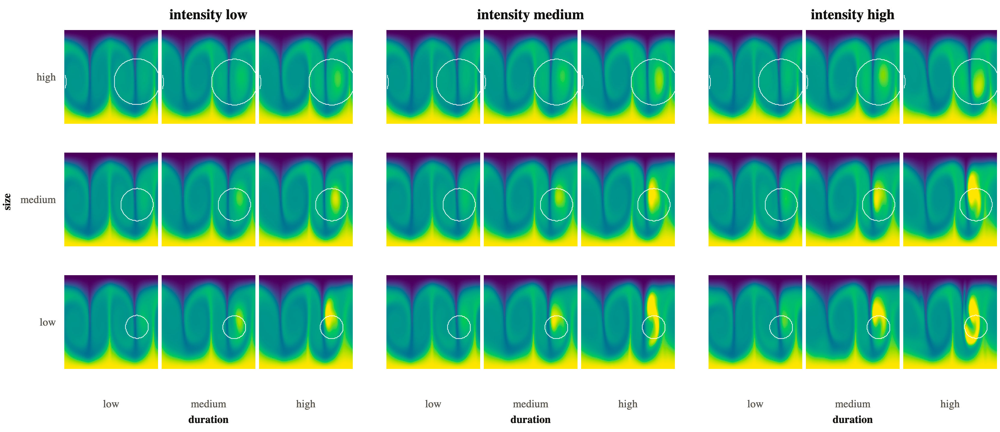
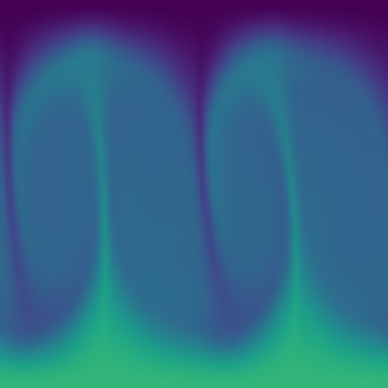
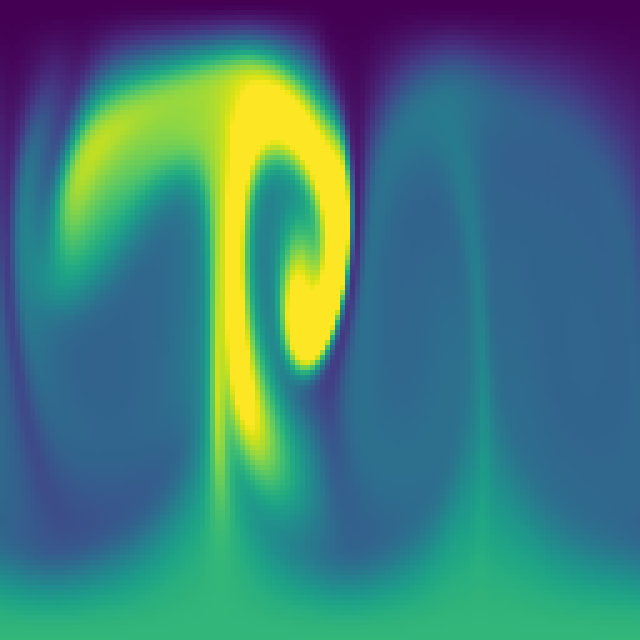
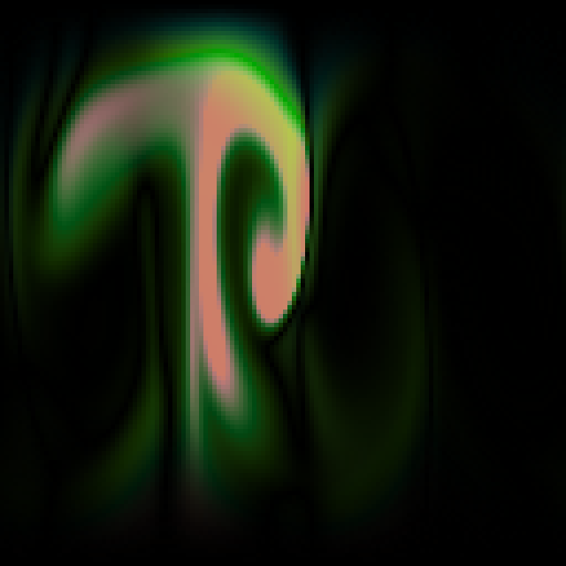
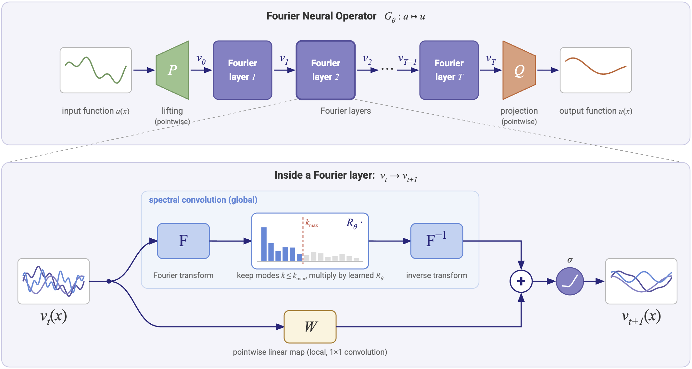

Slides available at smnbrnrd.github.io/.
Event
Discrete occurrences at a point in space and time
earthquakes, crimes, disease cases
Trajectory
The path traced by a moving object through space and time
GPS tracks, hurricane paths
Point reference
A continuous field sampled at moving stations
weather balloons, ocean buoys
Raster
A field recorded on a fixed grid at regular times
satellite imagery, climate fields, video
Atluri et al., Spatio-Temporal Data Mining: A Survey of Problems and Methods ACM Computing Surveys (2018).
A raster field is a sequence of $T$ frames, each a fixed grid of $H \times W$ cells, with $C$ channels per cell (not a single intensity): $$X = (X_1, …, X_T), \quad X_t ∈ \mathbb{R}^{C \times H \times W}$$
Models designed for RGB videos are rarely straightforwardly applicable to ST fields with $C>3$ channels.
An observation that departs from normal behavior: rare and usually unexpected.
Rare. A tiny fraction of any stream, so a balanced, representative labeled set can never be collected.
Open-ended. There are countless ways to be abnormal; the next one may resemble nothing seen before.
The goal is to model the normal behavior $\mathbf{X} \sim p_\text{norm}$ and detect deviations s.t. $p_\text{norm}(\mathbf{X}) < \tau$.
Blázquez-García et al., A Review on Outlier/Anomaly Detection in Time Series Data, ACM Computing Surveys (2021);
Ruff et al., A Unifying Review of Deep and Shallow Anomaly Detection, Proc. IEEE (2021).
These are different tasks. A method that wins on one can lose on another. Because the label is a human convention, reported scores cannot be ranked against each other.
Video AD benchmarks
PDE benchmarks (PDEBench, The Well)
What we need
Takamoto et al., PDEBench: An Extensive Benchmark for Scientific Machine Learning, NeurIPS Datasets and Benchmarks (2022)
Ohana et al., The Well: a Large-Scale Collection of Diverse Physics Simulations for Machine Learning, NeurIPS Datasets and Benchmarks (2024).
Each simulation is produced by numerically integrating a governing PDE with a spectral solver.
Normal = the simulation obeys the equation
$$ \partial_t\mathbf{u} = \mathcal{F}(\mathbf{u}) $$
Anomaly = one extra source term
$$ \partial_t\mathbf{u} = \mathcal{F}(\mathbf{u}) + \mathbf{s} $$
“Normal” becomes precise, and the anomaly is grown by the physics, not pasted onto a finished frame.
Navier–Stokes, Kolmogorov flow
$$ \begin{aligned} \partial_t\mathbf{u} + (\mathbf{u}\cdot\nabla)\mathbf{u} &= -\nabla p + \nu\nabla^2\mathbf{u} \textcolor{red}{+ \mathbf{F}(\mathbf{x}, t)} \end{aligned} $$Rayleigh–Bénard convection
$$ \begin{aligned} \partial_t T + (\mathbf{u}\cdot\nabla)T &=\kappa\nabla^2 T \textcolor{red}{+ \mathbf{S}(\mathbf{x}, t)} \end{aligned} $$Both on 128 × 128 grids, solved with Dedalus (spectral), a frame every 0.5 time units, 200 usable frames.
Every simulation is produced by numerically integrating a governing PDE with a spectral solver (dedalus-project.org).
Burns et al., Dedalus: A flexible framework for numerical simulations with spectral methods, Phys. Rev. Research 2, 023068 (2020).
We generate the simulation with and without anomaly to obtain ground truth anomaly labels.
Burns et al., Dedalus: A flexible framework for numerical simulations with spectral methods, Phys. Rev. Research 2, 023068 (2020).
Parameters of the anomaly injection function: amplitude factor, variance of the gaussian kernel, and duration of the injection

Not a difficulty measurement but an experimental design to explore the robustness of the detection algorithm.



Use of pixel-based tracers, whose propagation is based on the dynamics of partial differential equations.
Detection family (video AD)
Forecasting-residual family
Every model is trained once per physics and evaluated on all 27 cell-specific test sets. Only three of them at the moment are part of the benchmark (the one in bold).
Park et al., Learning Memory-guided Normality for Anomaly Detection, CVPR (2020);
Zhou et al., MA-PDM: Motion-Appearance Patch Diffusion Model for Video Anomaly Detection, AAAI (2025);
Li et al., Fourier Neural Operator for Parametric Partial Differential Equations, ICLR (2021);
Guibas et al., Adaptive Fourier Neural Operator: A Generalized Fourier Neural Operator for Parametric Partial Differential Equations, ICLR (2022);
Gao et al., SimVP: Simpler Yet Better Video Prediction, CVPR (2022);
Tang et al, Video Prediction Transformers without Recurrence or Convolution, TMLR (2026).
Predict a frame from a memory of normal prototypes, and compare to the observed one
An anomaly has no prototype → the prediction degrades → it gets flagged
The learnt memory prevents the model to generalize beyond the normal domain.
Park et al., Learning Memory-guided Normality for Anomaly Detection, CVPR (2020)
Patch-based appearance and motion encoding
Diffusion process to generate a future frame
Anomaly = the gap between that generated future and reality
Zhou et al., MA-PDM: Motion-Appearance Patch Diffusion Model for Video Anomaly Detection, AAAI (2025)

Natural fit for PDE data, where waves and coherent swirls live in frequency space
Trained to forecast normal evolution; the per-pixel residual is the anomaly score
| Metric | Role | Level |
|---|---|---|
| IoU | Primary, threshold-free | simulation |
| F1, precision, recall | At the calibrated threshold | frame |
| FPR on normal simulations | Clean-simulation false alarms, at the calibrated threshold | simulation / frame |
| Pixel-level IoU | Localization diagnostic | pixel |
Threshold. Chosen on the validation split to maximize F1, then frozen and applied to 100 normal and 100 anomalous test simulations disjoint from val. Only these test numbers are cited.
Frame imbalance: anomalous frames are a few percent of test at Low duration and about a tenth at High duration.
Done
Open
Mean over all 27 configurations:
| Model | IoU | F1 |
|---|---|---|
| FNO | 0.409 | 0.558 |
| MNAD | 0.354 | 0.508 |
| MA-PDM | 0.330 | 0.476 |
False alarms on normal and anomalous runs:
| Model | Normal runs | Anomalous runs, outside label |
|---|---|---|
| FNO | 0.1 % | 13.5 % |
| MNAD | 0.1 % | 13.0 % |
| MA-PDM | 0.3 % | 13.4 % |
MNAD react first but stay high after it; FNO tracks the window, then drops
Mean over all 27 configurations:
| Model | IoU | F1 |
|---|---|---|
| FNO | 0.602 | 0.656 |
| MNAD | 0.184 | 0.222 |
| MA-PDM | 0.155 | 0.199 |
False alarms on normal and anomalous runs:
| Model | Normal runs | Anomalous runs, outside label |
|---|---|---|
| FNO | 2.2 % | 12.4 % |
| MNAD | 22.4 % | 29.4 % |
| MA-PDM | 25.8 % | 39.4 % |
FNO fires as the vortex appears and nowhere else; MNAD and MA-PDM peak before and after
IoU along one factor, the other two at medium · levels low / medium / high:
| Factor | FNO | MNAD | MA-PDM | ||||||
|---|---|---|---|---|---|---|---|---|---|
| RBC | NS | RBC | NS | RBC | NS | ||||
| Intensity | 0.32 / 0.42 / 0.46 | 0.49 / 0.73 / 0.62 | 0.30 / 0.40 / 0.40 | 0.11 / 0.15 / 0.20 | 0.28 / 0.39 / 0.41 | 0.13 / 0.11 / 0.15 | |||
| Duration | 0.26 / 0.42 / 0.50 | 0.61 / 0.73 / 0.69 | 0.22 / 0.40 / 0.49 | 0.08 / 0.15 / 0.30 | 0.22 / 0.39 / 0.50 | 0.07 / 0.11 / 0.24 | |||
| Size | 0.54 / 0.42 / 0.36 | 0.85 / 0.73 / 0.46 | 0.41 / 0.40 / 0.33 | 0.13 / 0.15 / 0.18 | 0.40 / 0.39 / 0.33 | 0.14 / 0.11 / 0.11 | |||
Mean over the three intensity levels (results not shown for clarity concerns):
Frame level, threshold calibrated on validation:
| Model | F1 · NS | F1 · RBC | Configurations where best · NS | Configurations where best · RBC |
|---|---|---|---|---|
| FNO2d | 0.656 | 0.558 | 26 / 27 | 22 / 27 |
| MNAD-pred | 0.222 | 0.508 | 1 / 27 | 5 / 27 |
| MA-PDM | 0.199 | 0.476 | 0 / 27 | 0 / 27 |
Pairwise F1 gap, FNO minus MNAD: +0.434 in NS (26/27 configurations), +0.050 in RBC (22/27).
Pairwise comparison across configurations:
| Comparison | RBC · mean gap | RBC · configurations won | NS · mean gap | NS · configurations won |
|---|---|---|---|---|
| FNO2d − MNAD-pred | +0.055 | 22 / 27 | +0.418 | 27 / 27 |
| FNO2d − MA-PDM | +0.080 | 24 / 27 | +0.447 | 27 / 27 |
| MNAD-pred − MA-PDM | +0.024 | 19 / 27 | +0.029 | 19 / 27 |
Wilcoxon signed-rank test over the 27 configurations: every pairwise gap is significant at p < 0.001 in both physics.
| Thread | Status | Planned |
|---|---|---|
| Release the benchmark suite (frozen splits, configs) | ≈ 90 % | upon publication |
| Open STAD framework (generation, models, evaluation) | ≈ 70 % | upon publication |
| Natively spectral detector (beyond repurposed FNO forecasters) | ≈ 35 % | Q1 2027 |
| Extension to climate fields (CAM-simulated, injected physical events) | ≈ 15 % | ? |
Controlled labels. Per-frame and per-pixel ground truth, physically consistent
Controlled difficulty. A full factorial over intensity, size and duration
Fair protocol. Normal-only training, calibrate-then-report, no point adjustment
Reproducible. Regenerable from seeds, released with code
Limitations and scope
Marwan Taia · Laurent Heutte · Simon Bernard
LITIS Laboratory, Université de Rouen Normandie